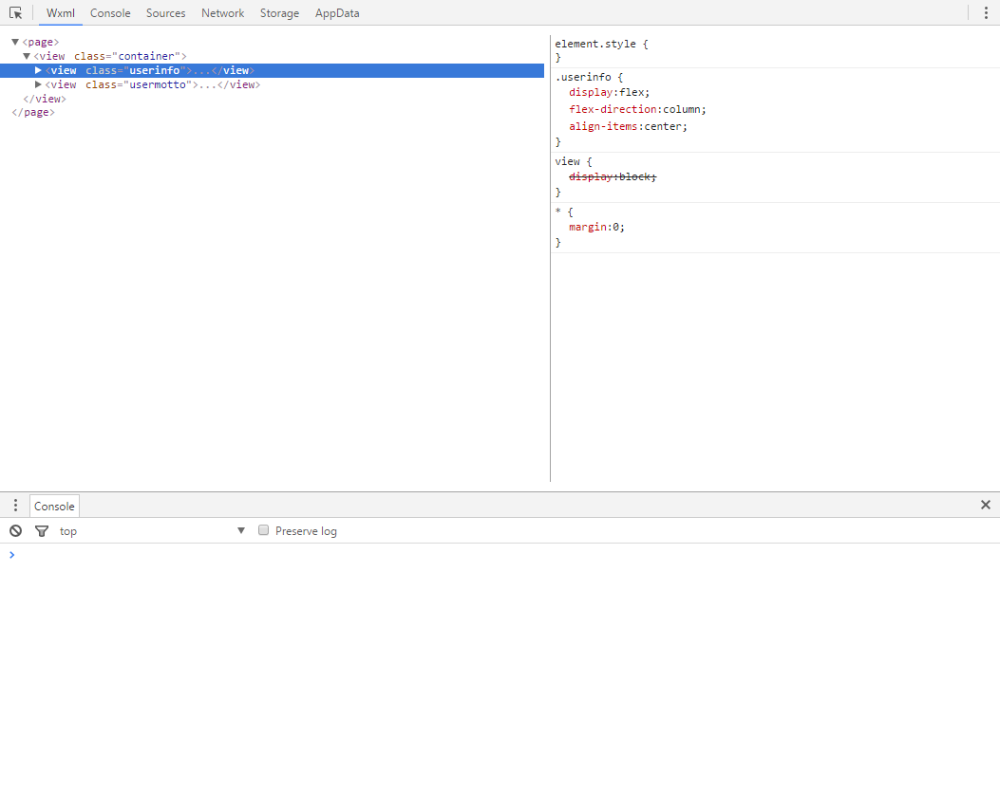
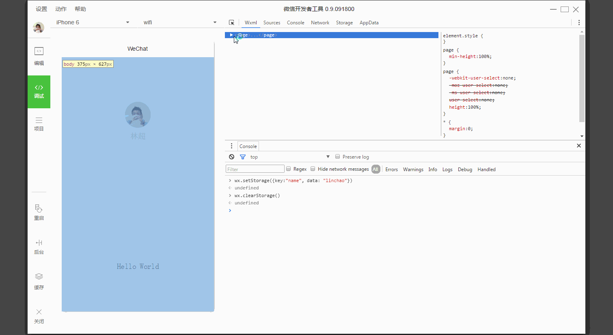
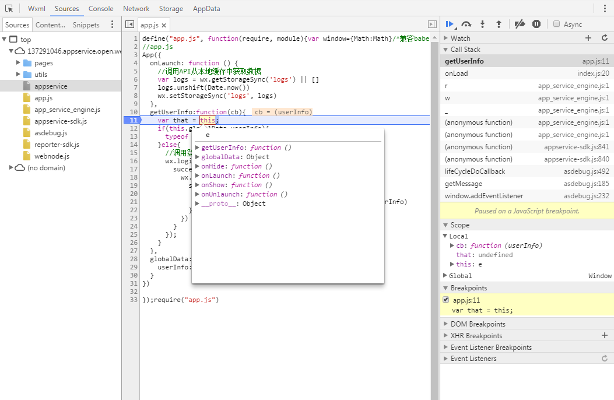
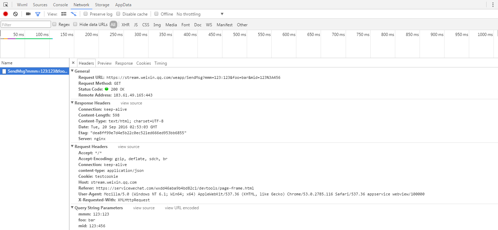
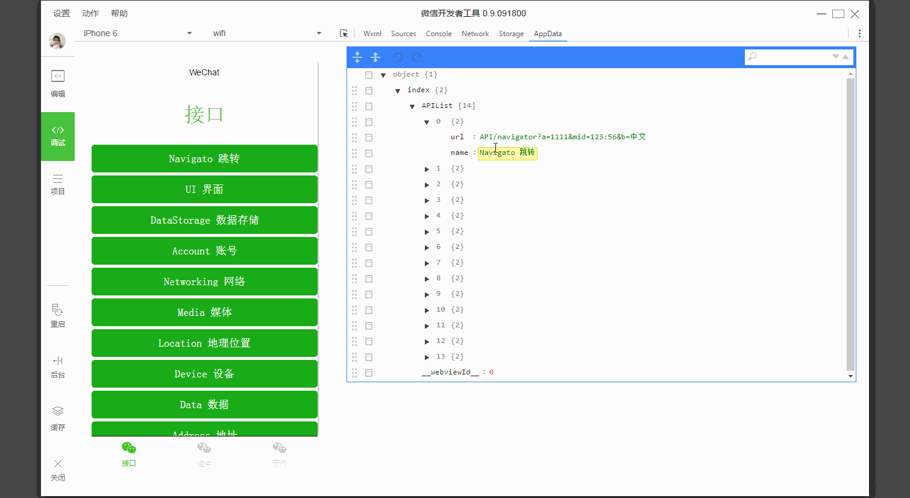
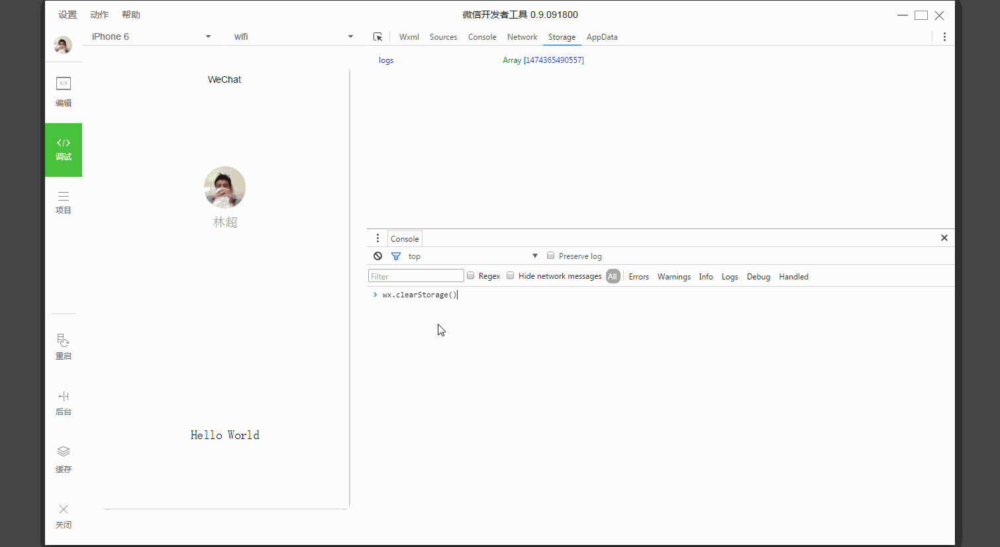
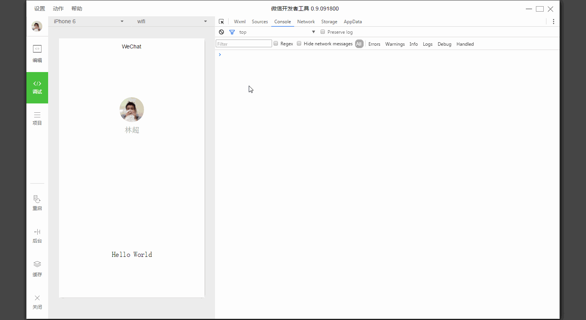
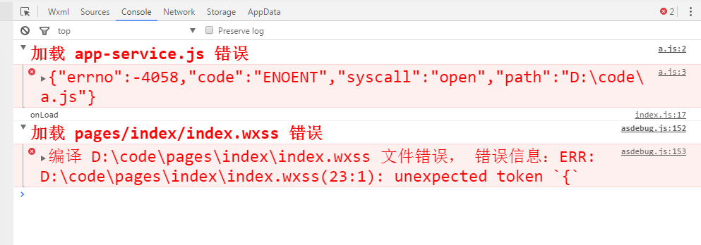
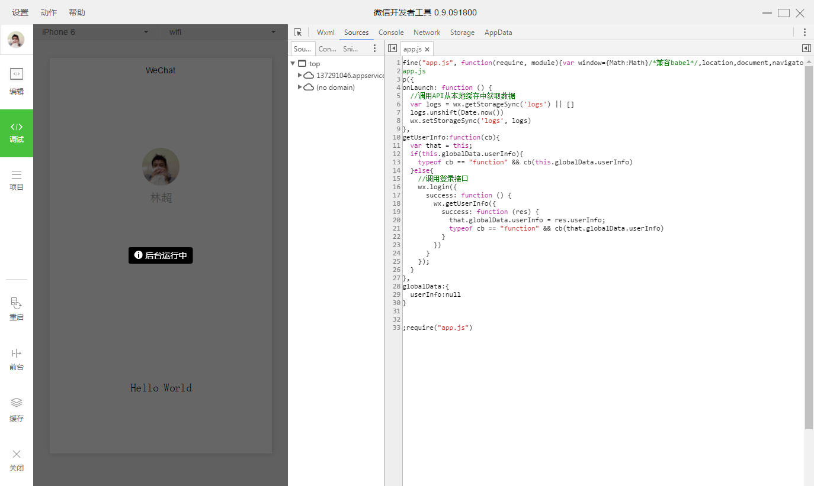
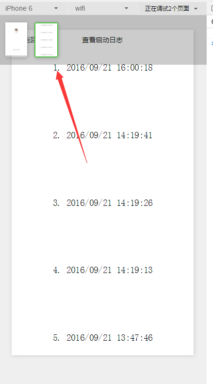

程序调试主要有三大功能区：模拟器、调试工具和小程序操作区
模拟器
模拟器模拟微信小程序在客户端真实的逻辑表现，对于绝大部分的 API 均能够在模拟器上呈现出正确的状态。
调试工具
调试工具分为 6 大功能模块：Wxml、Console、Sources、Network、Appdata、Storage以及

Wxml Pannel
Wxml Pannel 用于帮助开发者开发 Wxml 转化后的界面。在这里可以看到真实的页面结构以及结构对应的 wxss 属性，同时可以通过修改对应 wxss 属性，在模拟器中实时看到修改的情况。通过调试模块左上角的选择器，还可以快速找到页面中组件对应的 wxml 代码。

Sources Pannel
Sources Pannel 用于显示当前项目的脚本文件，同浏览器开发不同，微信小程序框架会对脚本文件进行编译的工作，所以在 Sources Pannel 中开发者看到的文件是经过处理之后的脚本文件，开发者的代码都会被包裹在 define 函数中，并且对于 Page 代码，在尾部会有 require 的主动调用。

Network Pannel
Netwrok Pannle 用于观察和显示 request 和 socket 的请求情况

Appdata Pannel
Appdata Pannel 用于显示当前项目当前时刻 appdata 具体数据，实时地反馈项目数据情况，可以在此处编辑数据，并及时地反馈到界面上。

Storage Pannel
Storage Pannel 用于显示当前项目的使用 wx.setStorage 或者 wx.setStorageSync 后的数据存储情况。

Console Pannel
Console Pannel 有两大功能：
开发者可以在此输入和调试代码

小程序的错误输出，会显示在此处

小程序操作区
小程序操作区帮助开发者模拟一些客户端的环境操作。例如当用户从小程序中回到聊天窗口，会触发一个小程序被设置为后台的api。

当小程序使用到多窗口的时候，可以在顶部操作区进行页面切换，需要注意的是这个操作只是为了方便开发者才存在的，在真实的微信客户端中是不会有的。
